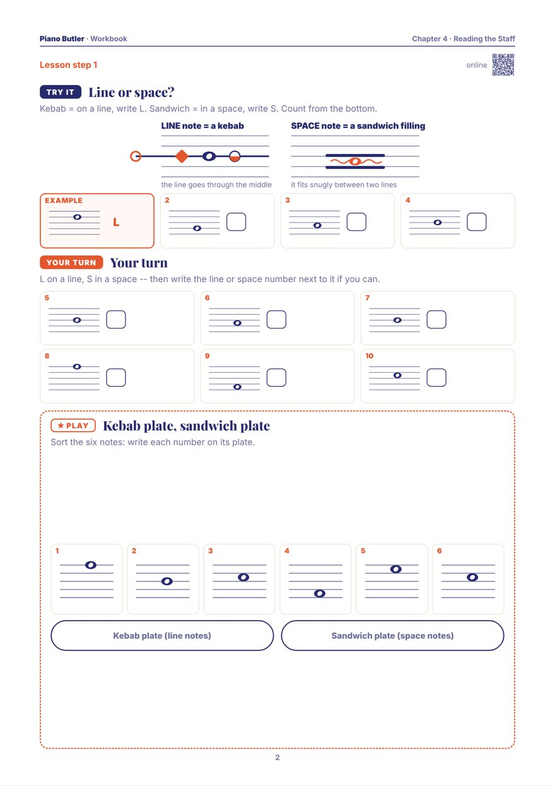

Music is written on a staff: five lines and the four spaces between them. Meet the royal family who live there — the King low, the Queen high, Princess Clara on middle C — and read your first nine notes.
The King lives at the low end of the piano and sings low. The Queen lives at the high end and sings high. And right in the middle, on middle C, lives Princess Clara. This chapter writes their notes down, so your eyes can read what your hands play.
The staff has five lines and four spaces, counted from the bottom: line 1 is the lowest. Every note lives either on a line — the line runs straight through its middle, like a skewer — or in a space: it fills the space and touches the line above and the line below, like a sandwich filling.
The staff is a map of the keys: higher on the staff is higher on the piano, further to the right. From a line to the very next space is a step — the next letter, the next white key. From a line to the next line, or a space to the next space, is a skip: one letter jumped over, the same skip as in the musical alphabet. Both work going up and coming down.
The curly sign is the treble clef. Long ago it was simply a letter G, and its curl still wraps round the second line from the bottom: the Queen's house, so every note on that line is G. The Queen sings high, and usually the right hand reads her staff. From Princess Clara's middle C up to the Queen's G is exactly five notes: C D E F G.
The bass clef began as a letter F. The King's house is the fourth line from the bottom, and the clef's two dots are his guards, one just above his line and one just below: the line between the guards is F. The King sings low, and usually the left hand reads his staff. From the King's F up to Clara is five notes too: F G A B C.
Put the Queen's staff on top and the King's underneath: that is the grand staff, one staff for each hand. Clara's middle C is written on a little ladder rung of its own — just under the Queen's staff when it belongs up there, just over the King's when it belongs down. Two places on paper, one key on the piano.
Show each one at the piano.

Skewer or sandwich: write L or S for ten notes on two big staves (the last six with their number too: L3, S2), then cook -- skewers on lines 1, 3 and 5, sandwiches in spaces 1, 2 and 4. One A4 page.
Print this pageThe whole chapter: Lesson Book + WorkbookThe same lesson with moving parts, and a seven-level drill: line or space, step or skip, the Queen's five, the King's five, both staves round Clara, writing notes by tapping the staff, and finding them on the keys.
Open the lessonThe staff has five lines and four spaces, counted from the bottom up. A note sits either on a line (the line runs through its middle) or in a space (it touches the lines above and below). Each line and space is one letter of the musical alphabet.
Middle C sits between the treble and bass staves, on a short line of its own. Written just under the treble staff or just over the bass staff, it is the same key on the piano — the one key both hands can reach.
Usually the right hand reads the treble clef (the higher notes) and the left hand reads the bass clef (the lower notes). The two staves together are called the grand staff.
They can help, but start smaller: first the nine notes round middle C, read from three friendly places — the Queen's G, middle C and the King's F — and always check the clef before reading. The rhymes work better once the two clefs feel like two different places.